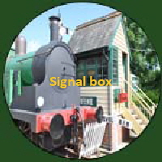
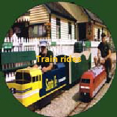
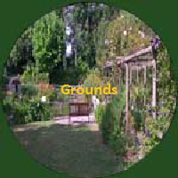
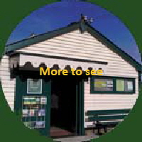

What to See
Explore the museum and its grounds

Euro Tunnel
Learn about the connection between the Elham Valley and the Channel Tunnel.

Station
Wander through our recreated 1930s station building filled with memorabilia.

Signal Box
See the signal box and discover how the railway was operated.

Grounds
Enjoy the well-maintained grounds surrounding the museum.

More to See
Browse our gift shop and discover more railway artefacts on display.
Train Rides
Take a ride on the miniature train around the grounds.